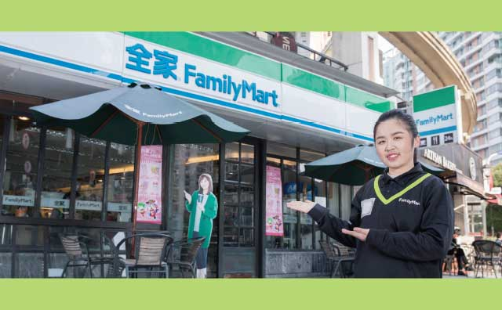
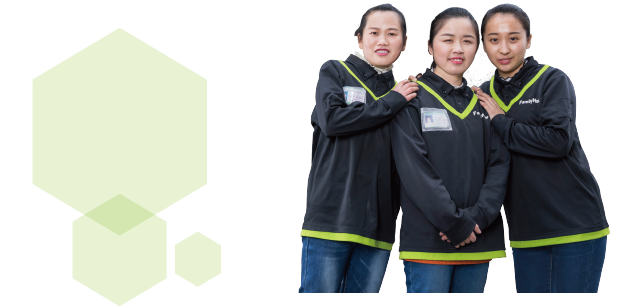

因祸得福
2009年4月，维霞在全家的一家直营店工作，可是三个月后在一次下班途中，不慎骑自行车出了车祸，导致脚踝骨折，之后动手术、撑钢钉、拆钢钉，几乎花了一年的时间休养。等到再次回到全家已是次年3月，当时的店长吉修源就是后来维霞的先生，一个店长、一个副店，家境相似，学历也都是本科，接触时间一长两人确定了恋爱关系。虽然意外受伤休整了近一年，但却因祸得福，维霞在这里建立了自己的小家庭。
结婚后，夫妻俩人商量究竟往哪个方向发展？维霞比较倾向走公司内部晋升的路线，但是修源想做加盟，俩人合计后决定等都升为店长后再加盟。于是，维霞升为店长后第一个月就申请了加盟。2011年4月，加盟后，她让两个弟弟也到店里帮忙，“我如果选择当老师，就照顾不到两个弟弟。弟弟们都很听话，反而我这个姐姐很叛逆，不甘心一辈子做老师。当时我跟爸爸说要上大学，以后赚钱了会把学费还给他。我觉得肩上有责任，进入便利店行业可以让他们一起来工作。”
家里大小事都由这个大姐作主，为弟弟张罗对象、购置房子，加盟后第一年赚到的钱，她给小弟在老家买了房。直到2013年，安置好家人后，终于轮到维霞自己买房，虽然面积不大，但是在上海也是有个安乐窝了。她说儿子现在2岁多，以后要为儿子好好拼搏。
首次瓶颈：我的明天在哪里？
“加盟后我们每个月的收入只够发工资，自己没赚多少甚至还要啃老本，这种状况持续了8个月。那段时间我一直问自己：我的明天在哪里？由于当时的门店租金太高，最后和经理商量决定移到迎春路现在的地址。渐渐地，这里一带被全家带旺了起来，生意有了起色。”坚信全家品牌力量的维霞果然越做越顺畅，“这些年全家便利在上海的发展势头迅猛，我也对全家的规范管理十分信服，只要大方针跟着公司走，就不会出现什么问题。有时候为了提升日商，我会动脑筋想办法改变，只要担当、经理觉得可行，就能操作，非常灵活。而不会像大卖场、大超市那样刻板。”
如今，维霞已是四家全家便利店的加盟业主，其中有一家是科技馆站地铁店，“地铁站的门店事情更繁琐，要求很严格，员工要经过特殊培训，如果一家店出错，会影响到整个全家在地铁通路的门店。所以交给老公全权打理比较放心。”两公婆一人坐镇迎春路店，一人负责地铁站店，为生活而奋斗着。
谈及顾客相处和员工管理，维霞笑说大部分顾客已经是非常熟悉了，难缠的顾客也会有，其实只要有一次搞定，后面就没问题了。“有次遇到一位难弄的客人，经过一次沟通后发现原来是我老乡，顿时客人的面色缓和许多。有些客人不喜欢我们面销，我会跟店员说，面对他们时就不要有过多的交流，他们听到我们收银时说的六大用语，就会骂我们，嫌我们啰嗦。”然而维霞的心态已经调整得很平和，她既要安抚顾客当下的情绪，事后还要安抚员工，让他们的莫名受气找到发泄口。

“现在员工大多是90后，所以不仅要关心他们的工作，也需要关心他们的生活。在招聘方面，我觉得人一定要老实、诚信，面试时我会先谈生活，了解他们的家庭，然后再聊工作经历。而我从来也没有把自己当成一个老板，把工作亲力亲为地教会员工，他们如果有想法可以跟我讲，不可能一直在这家店里工作。”曾有个副店是维霞一手带出来的，她毫无保留地教会她，“我就跟她讲，不要把自己当成员工，而要以店长的身份来管理店，等将来有自己的想法想进一步发展了，就可以去做。后来这位副店也加盟了全家。我认为要学会发现员工的优点，把他们的优点利用起来就行了。”

再临困境：淡然面对，放松心态
2016年年底，离全家不足100米处开了家永辉超市，主打水果蔬菜。由于商品与全家的相似性较大，超市对维霞的门店形成了不小的威胁。永辉甫一开张就大打价格战，尤其是乳品、饮料类拉动了不少人气。维霞每天不仅要关心自家店的情况，也常常跑去竞争对手那里打探虚实。
毕竟是久经沙场，维霞自称不像第一次困境时那么害怕了，现在反而很淡然，“一是因为全家的品牌已经家喻户晓，二是鲜食和烧烤盘是对手的弱势，还有现磨的湃客咖啡也是我们的热销产品。前段时间永辉做了大量的促销活动，对我们有明显的冲击，让我压力很大。他们促销过后，我们才有了些回升。尽管如此，我们每月日商还是比去年同期有所增长。”
在“黑白双金”的面销上，维霞采取了灵活化的方式，比如有顾客要买咖啡，尽量推销买2杯送更多积分的优惠活动，第一杯先请顾客拿走，然后在收银条上记一笔，第二杯下次再取。这样就能圈住顾客。“有次有个熟客，我向她面销尊享卡，因为有额外积分送，这样积分滚积分，她一下子买了178杯咖啡。所以有竞争对手在隔壁，我们要更加地用心、打起十二分精神来做生意。”
今年还有一个棘手的问题：员工难招。“员工中很多人都是从外地来的，原本借的房子是比较低廉的私房，现在成片的私房拆迁，他们都说不是不想做，而是房价太贵，不得不回老家找工作。这个情况是普遍性的，不仅是便利店行业，餐饮行业也是这样。前阵子晚上10点多和同事们去吃宵夜，到了一家餐厅门口，老板居然问我们是不是去应聘的？可见今年很多服务性行业都缺人。” 为了解决这方面的问题，维霞打算提供住宿，自己租房给员工住，缓解他们住宿的压力。
“全家给了我很多，几乎所有的一切都来自全家。我要怀着感恩的心态尽自己的能力做到最好。现在对我来说最重要的是爸妈和一家人的健康。”为老板则强、为母则强，维霞去年3月刚续了五年的合约，她说如果条件允许，还会继续增加加盟店，增强自己的实力。